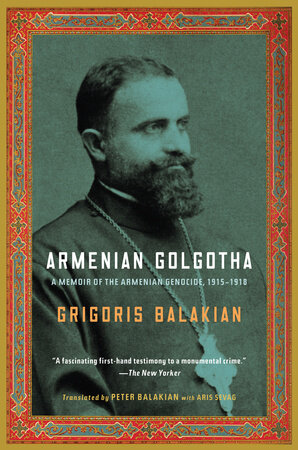
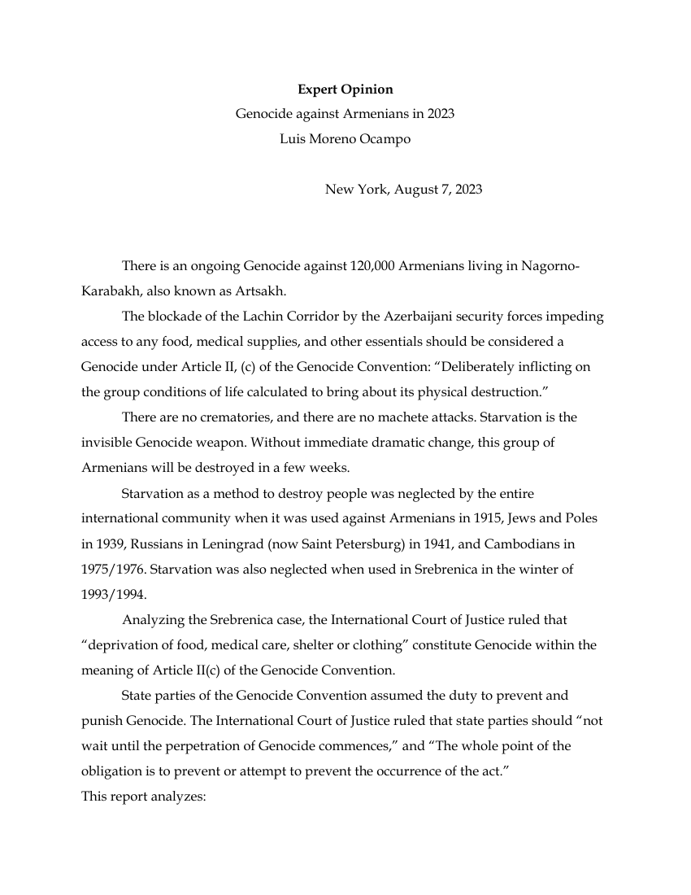

33:33 · 4 OPERE
Appello in difesa di civili assediati senza acqua o elettricità.
Il filo del discorso
Un’apertura volutamente ambigua su civili privati di beni essenziali introduce un appello per la popolazione armena del Nagorno-Karabakh. Dr Divago denuncia quella che considera una forte disparità di attenzione rispetto alla guerra di Gaza e ne ricava una critica dei media e dell’indignazione selettiva. Richiama la testimonianza di Grigoris Balakian sul genocidio armeno e il parere di Luis Moreno Ocampo sul blocco del corridoio di Lachin. La discussione passa poi agli interessi energetici europei, al sostegno turco all’Azerbaigian e alla retorica di Erdoğan. Nella seconda parte il relatore collega finanziamenti universitari, antisemitismo e ripetizione degli slogan a una più ampia perdita di autonomia del pubblico. Le accuse su media, atenei e gruppi sociali restano attribuite a lui, senza assumere che la mancata conoscenza di un conflitto provi indifferenza morale o appartenenza politica. La scheda distingue inoltre i tempi sovrapposti nel parlato: il blocco e il rapporto dell’agosto 2023 precedono l’esodo di massa del settembre successivo, mentre l’audizione delle dirigenti universitarie richiamata nel video si tenne in dicembre. La conclusione invita a cercare fonti e a trasformare l’informazione ricevuta in nuove domande.
I libri nel discorso

Vangelo secondo Matteo
Copertina del volume completo: San Paolo, 2014 · Nuova Versione dai Testi Antichi · edizione di riferimento
Vangelo secondo Matteo è un libro della Bibbia. L’immagine mostra il volume completo San Paolo di riferimento, non un’edizione autonoma del singolo libro e non una versione identificata nella citazione.
Matteo, immagine dei sepolcri imbiancati: riferimento a 23:27–28; autore evangelico esplicito.
Passaggio 2:27 ↗ · Fonti e libro ↗
Il Golgota armeno / Armenian Golgotha
Copertina: Armenian Golgotha: A Memoir of the Armenian Genocide, 1915–1918, Vintage, 9 marzo 2010, 576 pagine, traduzione di Peter Balakian con Aris Sevag, ISBN 9781400096770. Copertina verticale completa con ritratto dell’autore e cornice ornamentale rossa e oro. Originali armeni in due volumi, Vienna 1922 e Parigi 1959; traduzione inglese Knopf 2009. Non identificata l’edizione mostrata nel filmato.
Immagine autentica dell’opera, controllata visivamente; l’edizione di riferimento non è attribuita al filmato.
Il Golgota armeno, Grigoris Balakian; titolo e autore espliciti, edizione del filmato non identificata.
Passaggio 11:19 ↗ · Fonti e libro ↗
Expert Opinion: Genocide against Armenians in 2023
Prima pagina del documento: PRIMA PAGINA DEL DOCUMENTO originale di Luis Moreno Ocampo, Expert Opinion: Genocide against Armenians in 2023, New York, 7 agosto 2023, 28 pagine. Riproduzione integrale della pagina iniziale, con titolo, autore, data e apertura del parere, ricavata direttamente dal PDF dell’autore. Nessuna copertina commerciale o sentenza giudiziaria attribuita al rapporto.
Prima pagina del parere originale di 28 pagine. La qualificazione giuridica esprime l’analisi dell’autore; non è una pronuncia di un tribunale.
Luis Moreno Ocampo, Genocide against Armenians in 2023; rapporto di 28 pagine riconoscibile e titolo esplicito.
Passaggio 11:45 ↗ · Fonti e libro ↗Vangelo secondo Luca
Identificazione probabile
Copertina del volume completo: San Paolo, 2014 · Nuova Versione dai Testi Antichi · edizione di riferimento
Vangelo secondo Luca è un libro della Bibbia. L’immagine mostra il volume completo San Paolo di riferimento, non un’edizione autonoma del singolo libro e non una versione identificata nella citazione.
Cieco di Gerico e richiesta di vedere nuovamente: probabile allusione a Luca 18:35–43, soprattutto 18:41; presente anche un parallelo in Marco 10.
Passaggio 18:48 ↗ · Fonti e libro ↗